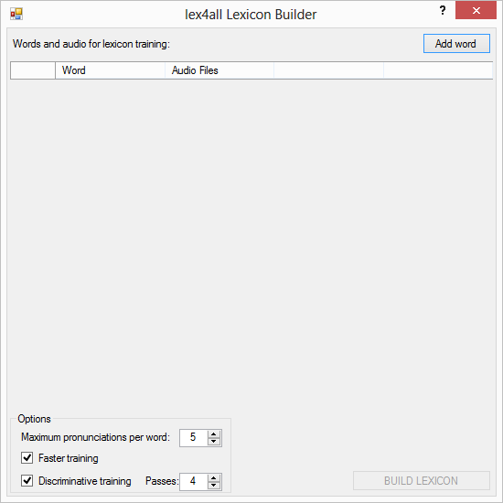
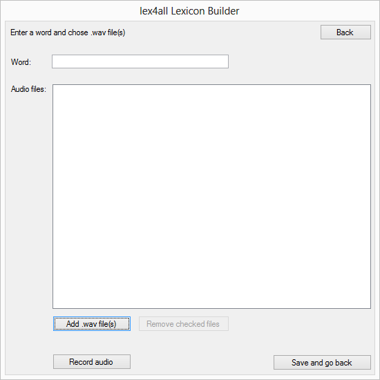
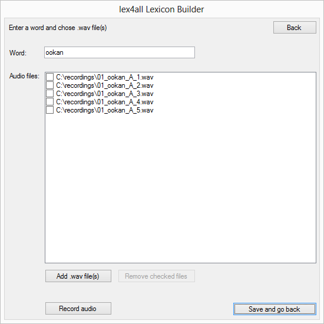
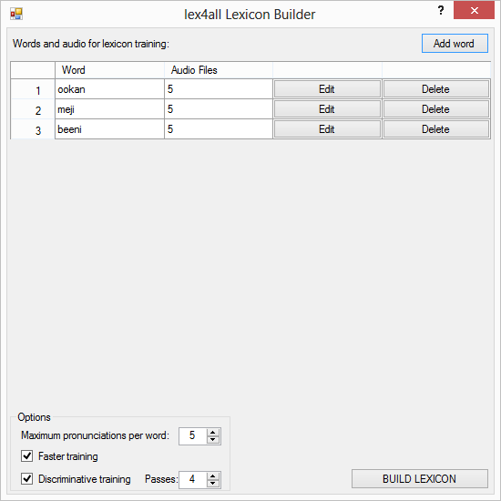
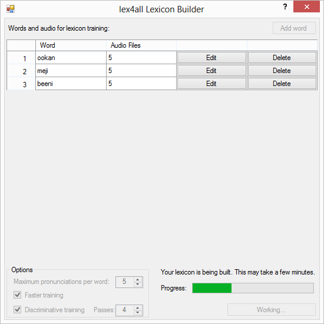
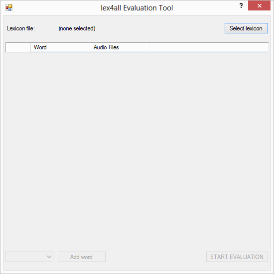
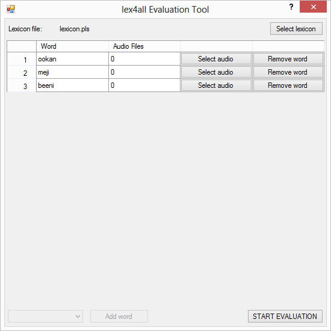
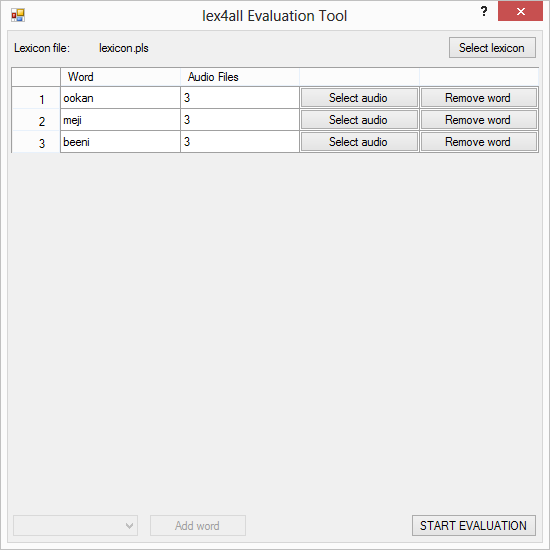
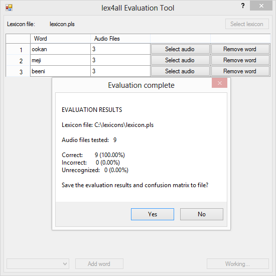

Walkthrough

Building a lexicon
Click "Build a new lexicon" to open the Lexicon Builder.
Click "Add word", and you'll see a new form.
Type in a word or short phrase in your target language, and click "Add .wav file(s)" to browse your computer for recordings of that term.
Or click "Record audio" to use the Recorder.

Once you've selected the files you want to use, click "Save and go back" to return to the main form. You'll see the words you've entered, and the number of recordings you've selected for each one (hover your mouse over this number to see the file names). Edit or delete a word using the buttons next to it.
At this point, you might want to change the options using the controls on the lower left. You can hover over the options to read more about them. If you're not sure, just leave them as they are. When you're ready, click "BUILD LEXICON" and choose where to save your lexicon file. The program will begin to run.
Congratulations, your lexicon is finished!

You can now use the Evaluation Tool to test your new lexicon, or keep building more lexicons.
Evaluating a lexicon
Open the evaluation tool by clicking "Evaluate an existing lexicon" on the start-up page, or by answering "Yes" when lex4all asks if you'd like to evaluate the lexicon you just built.
Click "Select lexicon" and browse your computer for the XML lexicon you want to test. lex4all will read the lexicon and list the terms it contains.
Click "Select audio" to browse for the recording(s) you'd like to use to test each word. Remove any terms you don't want to evaluate (you can always replace them later).
When you're ready, click "START EVALUATION". lex4all will test your lexicon and report the recognition accuracy. You can save the report and a confusion matrix (telling you which terms were recognized as which) for later reference
